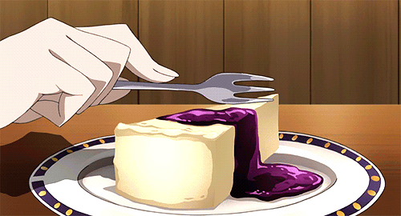

NYC Cheesecake

Ingredients
For the Crust:
- 1½ cups graham cracker crumbs
- 2 tablespoons sugar
- ½ cup (1 stick) unsalted butter, melted
For the Filling:
- 4 packages (8 oz each) cream cheese, softened
- 1 cup granulated sugar
- 1 cup sour cream
- 1 teaspoon vanilla extract
- 4 large eggs
- 2 tablespoons all-purpose flour (optional, for extra structure)
Optional Toppings:
- Fresh berries
- Fruit compote
- Whipped cream
- Chocolate or caramel sauce
Steps
- Prepare the Crust
- Preheat oven to 325°F (163°C).
- Mix graham cracker crumbs, sugar, and melted butter in a bowl until well combined.
- Press the mixture into the bottom of a 9-inch springform pan.
- Bake for 10 minutes, then let it cool while you make the filling.
- Make the Filling
- In a large bowl, beat softened cream cheese until smooth.
- Add sugar and mix until creamy.
- Blend in sour cream, vanilla extract, and flour (if using).
- Add eggs, one at a time, mixing on low speed just until combined (don't overmix).
- Assemble and Bake
- Pour the filling over the cooled crust.
- Tap the pan gently on the counter to release air bubbles.
- Optional: Place the pan in a water bath (wrap the pan in foil to prevent leaks).
- Bake for 50-60 minutes, or until the center is set but still slightly jiggly.
- Cool Gradually
- Turn off the oven, crack the door, and let the cheesecake cool inside for 1 hour.
- Then transfer to the counter to cool to room temperature.
- Chill and Serve
- Refrigerate for at least 4 hours, preferably overnight.
- Run a knife around the edge before releasing the springform pan.
- Top with fruit, sauce, or whipped cream, if desired.